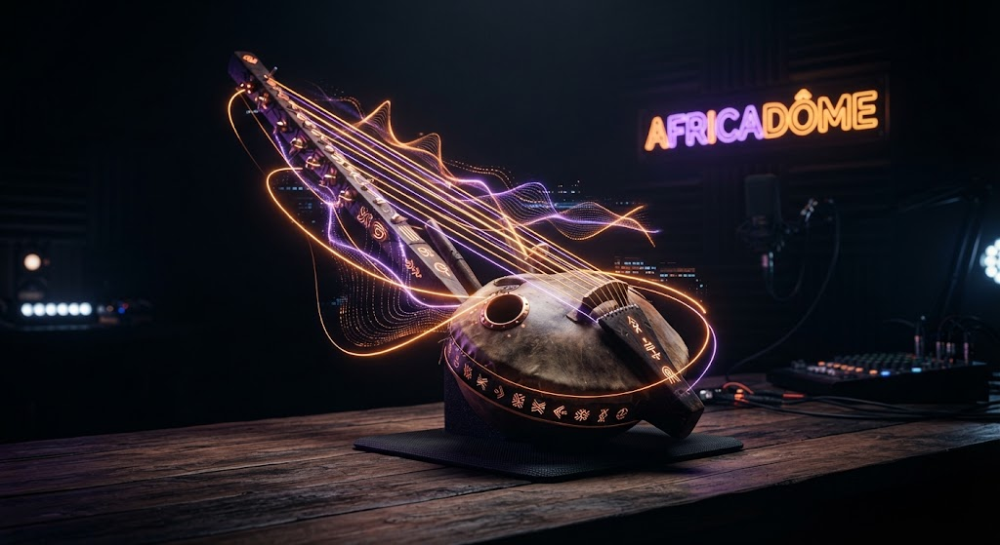

ENREGISTRÉ À DAKAR & ABIDJAN

Tech & souveraineté
Saison 3 • Épisode 48
IA générative et droits d'auteur : comment le continent protège son patrimoine musical et visuel
Invités de cet épisode
Dr Mamadou N'Diaye
Laboratoire des patrimoines sonores, Dakar
Me Awa Koulibaly
Cabinet indépendant, Abidjan
Chapitre 2 : L'échantillonnage de la kora et les modèles pré-entraînés
Très juste sur l'accord de Bangui. À Bamako, des collectifs tech nous sollicitent pour enregistrer nos instruments acoustiques, mais les contrats proposés sont des cessions totales de droits, en anglais, sans traduction ni garantie de redevance.